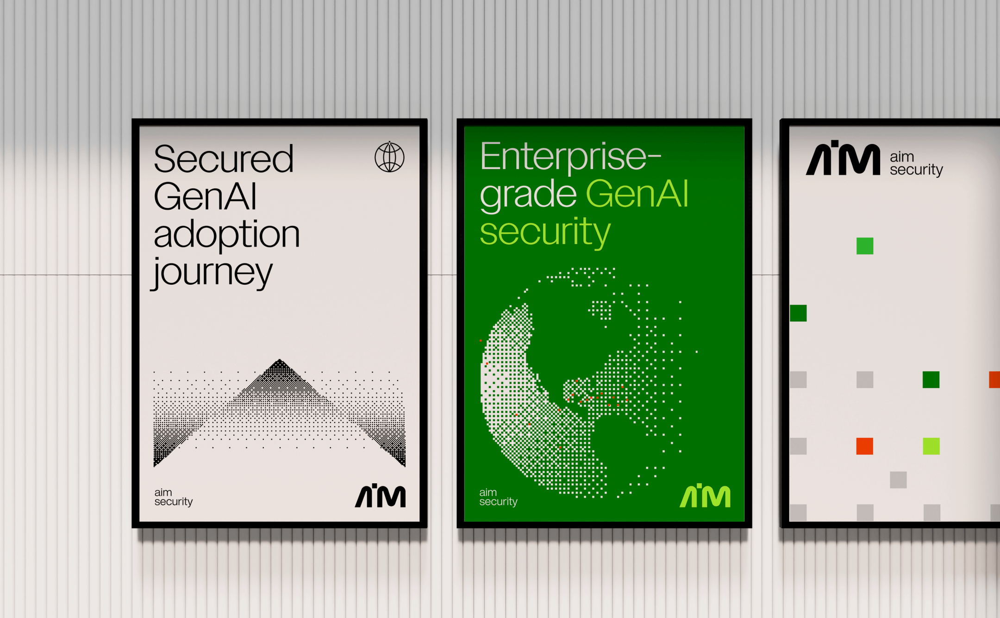
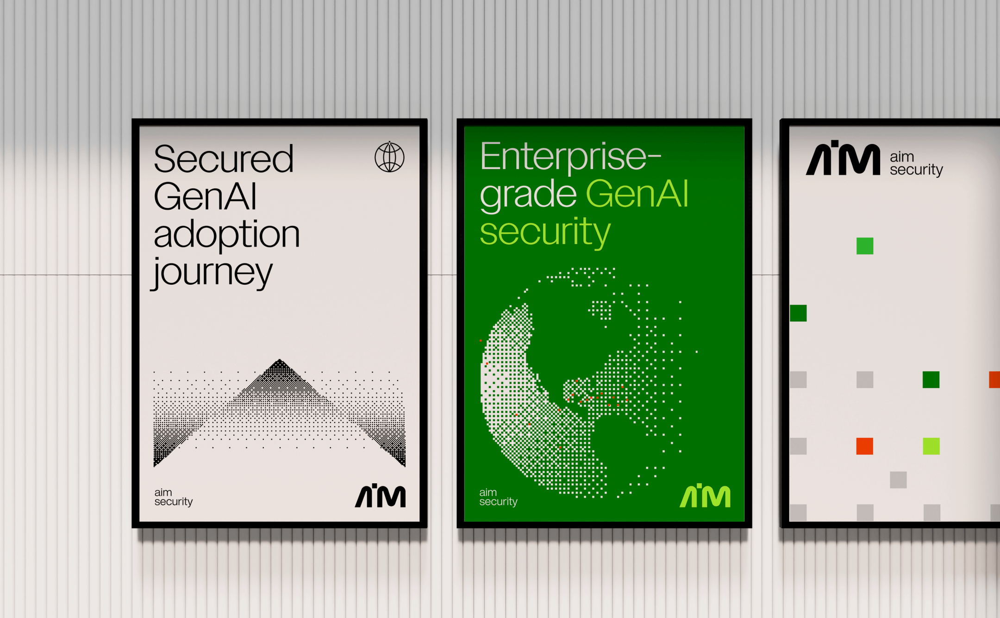

A 10-day Brand sprint for Aim
Let’s talk about the future of enterprises.
AI is almost everywhere today. And it's all just the beginning. It's impossible to ignore it, and it is here to
stay. While it will revolutionize our work, it poses significant security challenges such as data leakage,
malicious outputs, and privacy violations.
Enterprises must seek help to ensure security while being productive.
We’re here to help enterprises make AI possible.
Aim helps enterprises welcome AI into their lives, making it secure and safe, turning AI from something
intimidating into something enterprises can trust and rely on.
Whether public, private or homegrown GenAI systems, Aim protects the use of GenAI, ensuring every input and
output of the model is securely managed.We’ve created a Holistic security GenAI solution that protects your
environment throughout your AI journey.
If you’re a CISO or security engineer, we feel you. We’ll create a secure environment where GenAI can be adopted
without harm or mistakes.
We’re here to be your partner and guide your teams to success. One prompt at a time.
Let’s go together, far into the future, where AI plays a significant role in the enterprise day to day life.
Client | Aim
Creative Director | Eden Vidal, Inbal Lapidot Vidal
Brand Designer | Hadar Lozon
2D Animation | Artem Samoilyk
 
